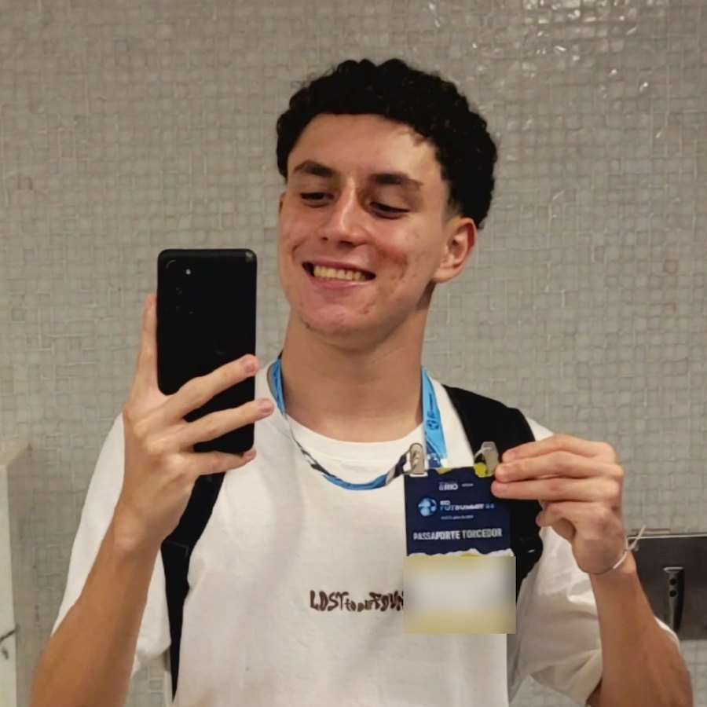

Sobre
O Borgessfut é uma página de futebol feita para ir além do que cabe numa publicação rápida. Aqui você acompanha conteúdos mais aprofundados e conhece um pouco mais sobre a página.

Quem faz
O Borgessfut foi criado por Felipe Borges, estudante de jornalismo na UERJ. A página surgiu ainda durante o ensino médio com o intuito de ter um projeto além da faculdade sobre futebol.